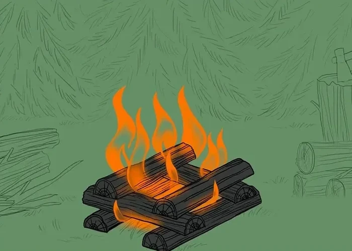

Log cabin fire
Looks like a small log crib: tinder or a small teepee fire in the center, walled in on each side by logs of roughly equal length — two logs laid in parallel per "floor", the next floor at right angles to the one below. The gaps between the logs act like a chimney, giving good draft and steady burning. Depending on size it works well for cooking, warmth, and light, and logs 7 cm or thicker in diameter burn a long time and leave plenty of embers that keep radiating heat. The downside is it needs more carefully chosen wood, a flat site, and more time to build.
- Place tinder or a small teepee fire in the center of the site.
- Choose logs of roughly equal length and lay the first "floor" — two logs parallel to each other on either side of the tinder.
- Lay the next floor at right angles to the one below, and keep going up to the height you want (4-5 floors is enough for sitting around).
- Light the tinder in the center — the walls of the cabin provide draft and steady burning.
